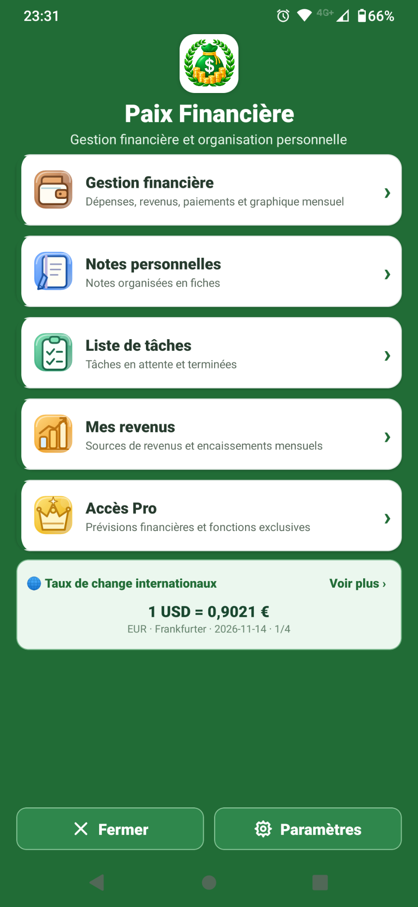

Gestion financière
Suivez dépenses, salaire, revenus complémentaires, paiements, abonnements et montants récurrents.
Paix Financière · Gestion financière et organisation personnelle
Paix Financière, anciennement connue sous les noms MyMoney, MeuDinheiro et MiDinero, réunit finances personnelles, tâches, notes et rappels dans une seule application Android.
Paix Financière est une application Android pour suivre les dépenses, gérer les revenus, organiser les tâches et conserver des notes personnelles.
Gestion financière et organisation personnelle
Suivez dépenses, salaire, revenus complémentaires, paiements, abonnements et montants récurrents.
Créez des tâches, rappels et notes personnelles en texte ou en voix.
Consultez graphiques, calendrier financier et indicateurs utiles.
Utilisez un PIN de 8 à 16 chiffres et un stockage local chiffré.
Ces captures réelles montrent l’interface française de manière claire et discrète.


Regardez la vidéo officielle en français ou ouvrez la playlist complète avec toutes les langues disponibles.
Les fonctions principales de finances, tâches et notes fonctionnent localement. Certaines fonctions externes nécessitent une connexion.
Oui. L’application a été renommée et conserve le même package Android : com.anspro.mymoney.app.
Le pied de page contient un lien vers la version détaillée en anglais.
Paix Financière est une application Android dédiée aux finances personnelles et à l’organisation du quotidien. Package : com.anspro.mymoney.app · Contact : moneyproapp@gmail.com
Paix Financière est disponible en portugais, anglais, espagnol, français, allemand, italien et indonésien.